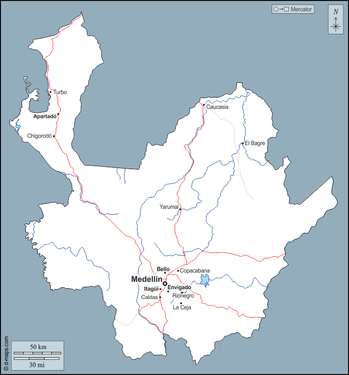

Antioquia

Sitios turisticos Antioquia
- Piedra del Peñol
- Guatapé
- Santa Fe de Antioquia
- Parque Arví
- Comuna 13 (Medellín)
Platos tipicos
- Bandeja paisa
- Sancocho antioqueño
- Ajiaco santafereño
- Lechona tolimense
- Arepa antioqueña
Sector economico
El sector economico de Antioquia se basa en la mineria, la agricultura y el turismo.